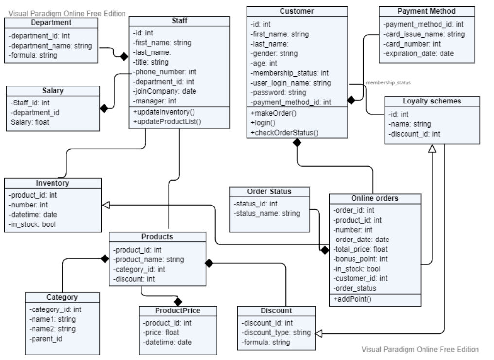
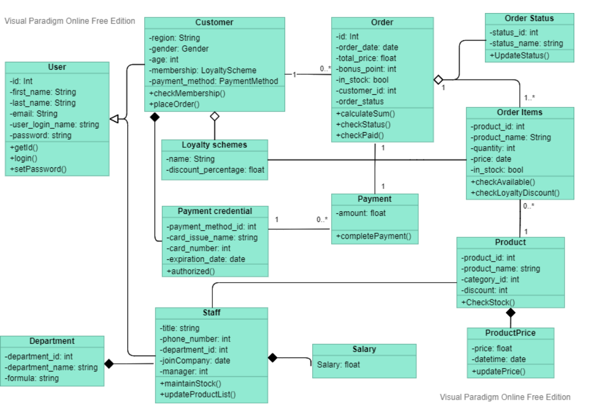
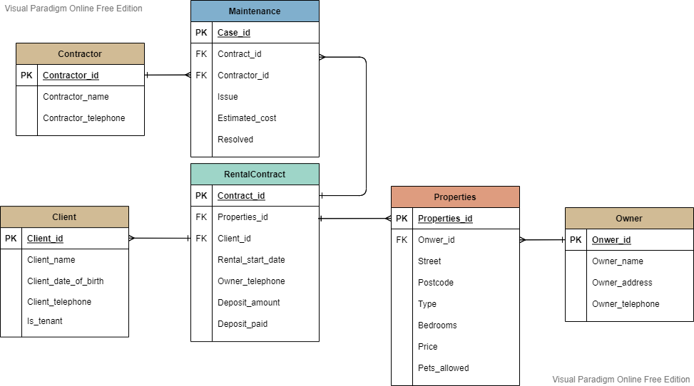

MY ARTEFACT
My answers to and outputs from exercises carried out during the module, including the ERD diagram created in Unit 8 and all your coding scripts and system designs.
Practical Activity
Codio Exercise
Practical Activity
Creating an object-oriented design
My supermarket is online-based. It provides services for the customer to shop online from the catalog which is based on the Products, ProductPrice, and the Category tables.
To access the service, the customer should register to have an account first. Then the customer may place orders and view order status. Each order will generate bonus points that will affect the customer's membership_status, to further unlock the customers to a variety of discounts.
The Staff will maintain the online supermarket including updating the product catalog and overlooking the inventory.
Class Diagrams
This is a class diagram based on my previous diagram of the online supermarket.
I have made some enhancements to the diagram. Some classes is simplified while only the necessary classes remain.
I also specify the relationship between each class.
Normalisation in practice
I merge the client and tenant entities into the client table by setting up an is_tenent column.
The contract table is added with an identical id. Each contract contains information about properties, clients, and contractors by foreign keys. All these three pieces of information have their own tables.
Owner info is included in the properties table as each property will always have the same owner.
The maintenance cases table includes the contract by a foreign key as the contract covered all the necessary information.
Codio Exercise
Classes and Objects
Exercise 15.5 - Objects are mutable
As an exercise, write a function named move_rectangle that takes a Rectangle and two numbers named dx and dy. It should change the location of the rectangle by adding dx to the x coordinate of corner and adding dy to the y coordinate of corner.
def move_rectangle(rect, dx, dy):
rect.corner.x += dx
rect.corner.y += dy
move_rectangle(box, 2, 3)
box.corner.x, box.corner.y
Exercise 15.6 - Copying
As an exercise, write a version of move_rectangle that creates and returns a new Rectangle instead of modifying the old one.
def move_rectangle(rect, dx, dy):
rect.corner.x += dx
rect.corner.y += dy
import copy
box2 = copy.deepcopy(box)
move_rectangle(box2, 5, 7)
box.corner.x, box.corner.y
box2.corner.x, box2.corner.y
Exercises - Classes and Objects
Write a definition for a class named Circle with attributes center and radius, where center is a Point object and radius is a number.
Instantiate a Circle object that represents a circle with its center at (150,100) and radius 75.
Write a function named point_in_circle that takes a Circle and a Point and returns True if the Point lies in or on the boundary of the circle.
Write a function named rect_in_circle that takes a Circle and a Rectangle and returns True if the Rectangle lies entirely in or on the boundary of the circle.
Write a function named rect_circle_overlap that takes a Circle and a Rectangle and returns True if any of the corners of the Rectangle fall inside the circle. Or as a more challenging version, return True if any part of the Rectangle falls inside the circle.
class Point:
"""Represents a point in 2-D space."""
class Circle:
"""Represents a circle.
attributes: center, radius.
"""
class Rectangle:
"""Represents a rectangle.
attributes: width, height, corner.
"""
import math
def point_in_circle(pnt, cir):
distance = math.sqrt((pnt.x-cir.center.x)**2 + (pnt.y-cir.center.y)**2)
if distance <= cir.radius:
return True
return False
def rect_in_circle(rec, cir):
d1 = math.sqrt((rec.corner.x-cir.center.x)**2 + (rec.corner.y-cir.center.y)**2)
d2 = math.sqrt((rec.corner.x+rec.width-cir.center.x)**2 + (rec.corner.y-cir.center.y)**2)
d3 = math.sqrt((rec.corner.x-cir.center.x)**2 + (rec.corner.y+rec.height-cir.center.y)**2)
d4 = math.sqrt((rec.corner.x+rec.width-cir.center.x)**2 + (rec.corner.y+rec.height-cir.center.y)**2)
if d1 <= cir.radius and d2 <= cir.radius and d3 <= cir.radius and d4 <= cir.radius:
return True
return False
def rect_circle_overlap(rec, cir):
d1 = math.sqrt((rec.corner.x-cir.center.x)**2 + (rec.corner.y-cir.center.y)**2)
d2 = math.sqrt((rec.corner.x+rec.width-cir.center.x)**2 + (rec.corner.y-cir.center.y)**2)
d3 = math.sqrt((rec.corner.x-cir.center.x)**2 + (rec.corner.y+rec.height-cir.center.y)**2)
d4 = math.sqrt((rec.corner.x+rec.width-cir.center.x)**2 + (rec.corner.y+rec.height-cir.center.y)**2)
if d1 <= cir.radius or d2 <= cir.radius or d3 <= cir.radius or d4 <= cir.radius:
return True
return False
def main():
box = Rectangle()
box.width = 100.0
box.height = 200.0
box.corner = Point()
box.corner.x = 50.0
box.corner.y = 50.0
circle = Circle
circle.center = Point()
circle.center.x = 150.0
circle.center.y = 100.0
circle.radius = 75.0
print(point_in_circle(box.corner, circle))
print(rect_in_circle(box, circle))
print(rect_circle_overlap(box, circle))
if __name__ == '__main__':
main()
Tutorial Labs Challenge - Classes and Objects External tool
This challenge will make some changes to the previous challenge. You will make use of your knowledge of classes, in addition to looping and lists. Lists can store objects so this challenge will require you to create a list of Person objects, that you will instantiate and add to the list.
1. In this challenge, you will create five (5) Person objects with appropriate values for first name, last name, weight, and height.
2. For this exercise, you can use the names p1, p2, p3, etc. for the names of your instantiated objects.
3. Once you have all five objects, create a list and store the objects in the list. Recall, an object is simply an instance of a user-defined type, so the syntax is the same as adding any other variable to a list.
4. Using a for loop, iterate over your list and print out the first names of each of your Person objects that you created.
5. Step 4 will require you to think about how you will access each member of the list and then how to access the correct attribute of that object to output it with a print statement
#Create a list named List
List = []
#Create a class Person
class Person:
"""Represents a generic Person."""
def __init__(self, first, last, weight, height):
self.first_name = first
self.last_name = last
self.weight_in_lbs = weight
self.height_in_inches = height
#Create five person objects
p1 = Person('Tom', 'Thumb', 179, 62)
p2 = Person('George', 'Hey', 180, 78)
p3 = Person('Micheal', 'Hill', 176, 70)
p4 = Person('Wendy', 'Joy', 153, 56)
p5 = Person('Ray', 'White', 168, 65)
#Restore the five objets in the list
List = List = [p1]+[p2]+[p3]+[p4]+[p5]
#Using a for loop, and print out the first names of each of the person I created
for p in List:
print(p.first_name)
print()
#Using a for loop, and print out all the information of each of the person I created
for p in List:
print(p.first_name + ' ' + p.last_name + ' weighs ' + str(p.weight_in_lbs) + 'lbs' + ' height ' + str(p.height_in_inches) + 'inchs.')
Class Functions and Class Methods
Exercise
As an exercise, write a function called print_time that takes a Time object and prints it in the form hour:minute:second. Hint: the format sequence '%.2d' prints an integer using at least two digits, including a leading zero if necessary.
def print_time(t):
h = t.hour
m = t.minute
s = t.second
print('%.2d:%.2d:%.2d' % (h, m, s))
Exercise
Write a boolean function called is_after that takes two Time objects, t1 and t2, and returns True if t1 follows t2 chronologically and False otherwise. Challenge: don’t use an if statement.
def is_after(t1, t2):
return (t1.hour, t1.minute, t1.second) > (t2.hour, t2.minute, t2.second)
Exercise 16.1
def div_times(t, d):
"""dived time objects with disdance
t: Time
returns: Time
"""
assert valid_time(t)
seconds = time_to_int(t) / d
return int_to_time(seconds)
avg = div_times(race_time, 26.2)
print_time(avg)
Exercise 16.2
from datetime import date
today = date.today()
weekday = date.weekday(today)
print(today)
print(weekday)
Challenge
class Person:
count = 0
BMI = 0
"""Represents a generic Person."""
def __init__(self, first, last, weight, height):
self.first_name = first
self.last_name = last
self.weight_in_lbs = weight
self.height_in_inches = height
Person.count = Person.count + 1
def calc_bmi(self):
return (self.weight_in_lbs * 703) / self.height_in_inches ** 2
Person.BMI = (self.weight_in_lbs * 703) / self.height_in_inches ** 2
def print_self(self):
#return ('first_name:'self.first_name,(self.weight_in_lbs * 703) / self.height_in_inches ** 2)
return ('first name: %s, last_name: %s, weight: %d, heightt: %d, BMI: %d' % (self.first_name, self.last_name, self.weight_in_lbs,self.height_in_inches,self.calc_bmi()))
@classmethod
def print_count(cls):
return cls.count
def print_BMI_range(cls):
if cls.BMI < 18.5:
return 'BMI range: underweight'
elif cls.BMI >= 18.5 & cls.BMI < 25:
return 'BMI range: healthyweight'
elif cls.BMI >= 25 & cls.BMI < 30:
return 'BMI range: overweight'
elif cls.BMI < 30:
return 'BMI range: obesity'
else:
return 'BMI range: Not defined'
p = Person('Tom', 'Thumb', 150, 62)
p2 = Person('Fred', 'Flint', 225, 57)
print(p.print_self())
print(p.print_BMI_range())
Exercise 17.5 - The init method
As an exercise, write an init method for the Point class that takes x and y as optional parameters and assigns them to the corresponding attributes.
class Point:
def __init__(self, x=0, y=0):
self.x = x
self.y = y
point = Point(3,8)
Exercise 17.6 - The __str__ method
As an exercise, write a str method for the Point class. Create a Point object and print it.
class Point:
def __init__(self, x=0, y=0):
self.x = x
self.y = y
def __str__(self):
return '%d,%d' % (self.x, self.y)
point = Point(3,8)
print(point)
Exercise 17.7 - Operator overloading
As an exercise, write an add method for the Point class.
class Point:
def __add__(self, other):
addpoint = self.x + other.x, self.y + other.y
return addpoint
Inheritance
Exercise 18.1
class PingPongParent:
pass
class Ping(PingPongParent):
def __init__(self, pong):
self.pong = pong
class Pong(PingPongParent):
def __init__(self, pings=None):
if pings is None:
self.pings = []
else:
self.pings = pings
def add_ping(self, ping):
self.pings.append(ping)
pong = Pong()
ping = Ping(pong)
pong.add_ping(ping)
Exercise 18.3
# inside class Time:
def __lt__(self, other):
t1 = self.time
t2 = other.time
return t1 < t2
Exercise 18.9 - Debuggin
To find the class that provides the definition of the method.
def find_defining_class(obj, meth_name):
for ty in type(obj).mro():
if meth_name in ty.__dict__:
return ty
>>> hand = Hand()
>>> find_defining_class(hand, 'shuffle')
challenge
Write a boolean function called is_after that takes two Time objects, t1 and t2, and returns True if t1 follows t2 chronologically and False otherwise. Challenge: don’t use an if statement.
class Person:
count = 0
"""Represents a generic Person."""
def __init__(self, first, last, weight, height, age = 0, gender = '',ttype = 1):
self.first_name = first
self.last_name = last
self.weight_in_lbs = weight
self.height_in_inches = height
self.this_age = age
self.this_gender = gender
self.bmi = ''
self.teacher_type = ttype
#self.calc_bmi = BMIrisk
Person.count = Person.count + 1
@classmethod
def print_count(cls,):
return cls.count
class Adult(Person):
def calc_bmi(self):
bmi_tmp = (self.weight_in_lbs * 703) / self.height_in_inches ** 2
print('BMI number is: ' + str(bmi_tmp))
if bmi_tmp < 18:
self.bmi = 'Underweight'
elif bmi_tmp > 18 and bmi_tmp < 25:
self.bmi = 'Normal'
elif bmi_tmp > 25 and bmi_tmp < 30:
self.bmi = 'Overweight'
elif bmi_tmp > 30:
self.bmi = 'Obese'
return self.bmi
class Teacher(Adult):
def calc_bmi(self):
bmi_tmp = (self.weight_in_lbs * 703) / self.height_in_inches ** 2
print('BMI number is: ' + str(bmi_tmp))
if bmi_tmp < 18:
self.bmi = 'Underweight'
elif bmi_tmp > 18 and bmi_tmp < 25:
self.bmi = 'Normal'
elif bmi_tmp > 25 and bmi_tmp < 30:
self.bmi = 'Overweight'
elif bmi_tmp > 30:
self.bmi = 'Obese'
return self.bmi
Encapsulation
Exercise
Create the method helper_method that calls __private_method and call this method outside of the class.
class PrivateClass:
def __init__(self):
self.__private_attribute = "I am a private attribute"
def __private_method(self):
return "I am a private method"
def helper_method(self):
return self.__private_method()
Lab Challenge
class Person:
def __init__(self, name, age, occupation):
self._name = name
self._age = age
self._occupation = occupation
def get_name(self):
return self._name
def set_name(self, new_name):
self._name = new_name
def get_age(self):
return self._age
def set_age(self, new_age):
self._age = new_age
def get_occupation(self):
return self._occupation
def set_occupation(self, new_occupation):
self._occupation = new_occupation
my_person = Person("Citra Curie", 16, "student")
print(my_person.get_name())
my_person.set_name("Rowan Faraday")
print(my_person.get_name())
print(my_person.get_age())
my_person.set_age(18)
print(my_person.get_age())
print(my_person.get_occupation())
my_person.set_occupation("plumber")
print(my_person.get_occupation())
Exercise 1
class Country:
def __init__(self, name, capital, population, continent):
self._name = name
self._capital = capital
self._population = population
self._continent = continent
def get_name(self):
return self._name
def set_name(self, new_name):
self._name = new_name
def get_capital(self):
return self._capital
def set_capital(self, new_capital):
self._capital = new_capital
def get_population(self):
return self._population
def set_population(self, new_population):
self._population = new_population
def get_continent(self):
return self._continent
def set_continent(self, new_continent):
self._continent = new_continent
name = property(get_name, set_name)
capital = property(get_capital, set_capital)
population = property(get_population, set_population)
continent = property(get_continent, set_continent)
my_country = Country("France", "Paris", 67081000, "Europe")
print(my_country.name)
print(my_country.capital)
print(my_country.population)
print(my_country.continent)
Exercise 2
class Artist:
def __init__(self, name, medium, style, famous_artwork):
self.__name = name
self.__medium = medium
self.__style = style
self.__famous_artwork = famous_artwork
my_artist = Artist('Bill Watterson', 'ink and paper', 'cartoons', 'Calvin and Hobbes')
#print (my_artist.__name)
#print (my_artist.__medium)
#print (my_artist.__style)
#print (my_artist.__famous_artwork)
print (my_artist._Artist__name)
print (my_artist._Artist__medium)
print (my_artist._Artist__style)
print (my_artist._Artist__famous_artwork)
Exercise 3
class BankAccount:
def __init__(self):
self._checking = ""
self._savings = ""
def get_checking(self):
return self._checking
def set_checking(self, new_checking):
self._checking = new_checking
def get_savings(self):
return self._savings
def set_savings(self, new_savings):
self._savings = new_savings
my_account = BankAccount()
my_account.set_checking(523.48)
print(my_account.get_checking())
my_account.set_savings(386.15)
print(my_account.get_savings())
Exercise 4
class Dancer:
def __init__(self, name, nationality, style):
self._name = name
self._nationality = nationality
self._style = style
@property
def name(self):
return self._name
@name.setter
def name(self, new_name):
self._name = new_name
@property
def nationality(self):
return self._nationality
@nationality.setter
def nationality(self, new_nationality):
self._nationality = new_nationality
@property
def style(self):
return self._style
@style.setter
def style(self, new_style):
self._style = new_style
my_dancer = Dancer("Savion Glover", "American", "tap")
print(my_dancer.name)
print(my_dancer.nationality)
print(my_dancer.style)
my_dancer.name = 'Anna Pavlova'
my_dancer.nationality = 'Russian'
my_dancer.style = 'ballet'
print(my_dancer.name)
print(my_dancer.nationality)
print(my_dancer.style)
Exercise 5
class Cyclist:
def __init__(self, name, nationality, nickname):
self._name = name
self._nationality = nationality
self._nickname = nickname
@property
def name(self):
return self._name
@name.setter
def name(self, new_name):
self._name = new_name
@property
def nationality(self):
return self._nationality
@nationality.setter
def nationality(self, new_nationality):
self._nationality = new_nationality
@property
def nickname(self):
return self._nickname
@nickname.setter
def nickname(self, new_nickname):
self._nickname = new_nickname
my_cyclist = Cyclist("Greg LeMond", "American", "Le Montstre")
print(my_cyclist.name)
print(my_cyclist.nationality)
print(my_cyclist.nickname)
my_cyclist.name = "Eddy Merckx"
my_cyclist.nationality = "Belgian"
my_cyclist.nickname = "The Cannibal"
print(my_cyclist.name)
print(my_cyclist.nationality)
print(my_cyclist.nickname)
---Back to Top---
- © Untitled
- Design: HTML5 UP